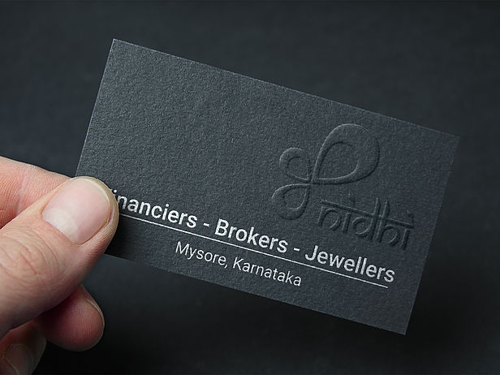
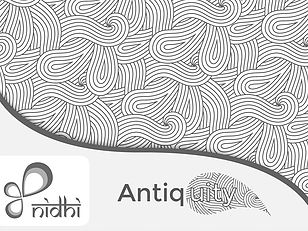

Being in a community association - fosters communal growth and harmony between individuals of varied backgrounds and diversity. And especially in cosmopolitan cities like Bengaluru, residences are formed in clusters, and these clusters form and elect Resident Welfare Societies/Associations to represent them. Also these associations conduct several events to promote more social responsibilities and so on.
Coming to the members of these associations, they need not be knowing the other members of the socity and connect with them personally, but as these members reside at a particular place - it is beneficial to have a localized avenue where in the user can communicate with other members easily and effectively. Hence the association app. Further this concept could be extended to any kind of association/club/organization, with mini closed-social networking opportunities.
Every train traveller in India, at some point of their journey would have wondered where he/she is?, what station the train would stop at next?, if the train is - travelling as per schedule and so on. Not just the travellers themselves, but the relatives, friends of the traveller/s also want to know the same details.
And even though there are applications which deliver the train journey information; they are too cluttery with too much of information, cumbersome with time schedule charts and in general hard to grasp on a mobile screen. Moreover there are no applications so far, wherein notifications could be set and alerts could be recieved.
So, there is a need for an app which is simple enough to understand, navigate and that would help deliver - only the journey details and nothing else; all of this along with the ability to get timely notifications.


For a state like Karnataka, which is blessed with all kinds of topography, flora-fauna, natural and heritagious diversity; the tourism sector and state economy can definitely benefit from a responsive website. And from the User's perspective he/she will be able to access travel related information from any web connected digital device at a single avenue. It would be a nice platform to showcase major attractions, destinations and all other associated services includign guidance and travel tips (both state sponsored and private) to users, especially people from other states and nationality.

Web page visulization :Tablet
Web page visulization :Tablet
Web page visulization :Phone